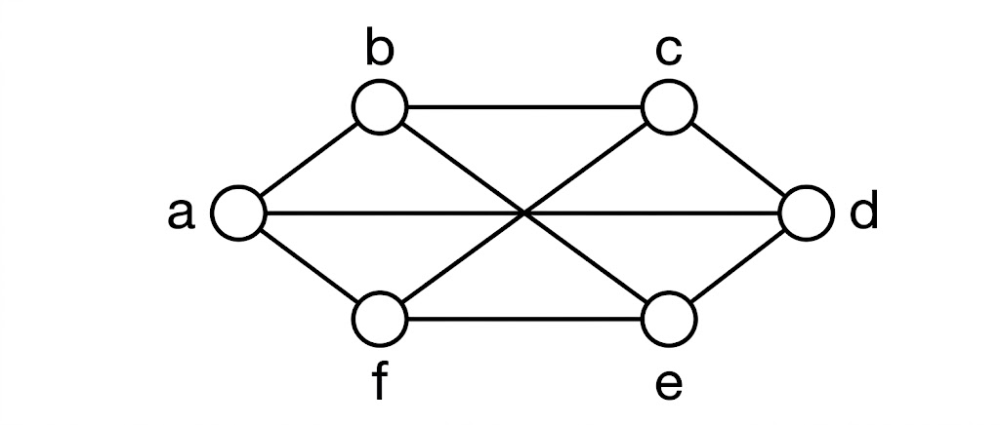

B.Tech. IV Semester
Examination, June 2023
Grading System (GS)
Max Marks: 70 | Time: 3 Hours
Note:
i) Answer any five questions.
ii) All questions carry equal marks.
a) If $A = \{2, 4, 6, 9\}$ and $B = \{4, 6, 18, 27, 54\}$, $a \in A$, $b \in B$, find the set of ordered pairs such that 'a' is factor of 'b' and $a < b$. (Unit 1)
b) Let R be the relation on the set R of all real numbers defined by a R b if and only if $|a - b| \le 1$ Then prove that R is reflexive, symmetric, but not transitive. (Unit 1)
a) Let $A = \{1, 2, 3, 4, 5, 6\}$ and a Rb if and only if a is multiple of b.
Find:
i) Domain
ii) Range,
iii) Matrix of a relation,
iv) Digraph of the relation R. (Unit 1)
b) What common relations on Z are the transitive closures of the following relations?
i) a Sb if and only if $a + 1 = b$,
ii) a Rb if and only if $a - b = 2$. (Unit 1)
a) i) Prove that $p \wedge q \Rightarrow q \vee p$ is a Tautology.
ii) Show that $(p \vee q) \wedge (-p) \wedge (-q)$ is a contradiction (Unit 3)
b) Prove that in any graph G, even number of vertices is of odd degree. (Unit 3)
a) Solve the equations
$6x + 15y + 55z = 76$,
$15x + 55y + 225z = 295$,
$55x + 225y + 979z = 1259$
Using Cholesky decomposition method. (Unit 4)
b) Find singular value decomposition composition for for $A = \begin{bmatrix} 1 & 0 & 1 \\ -1 & 1 & 0 \end{bmatrix}.$ (Unit 4)
a) To test the hypothesis that eating fish makes one smarter, a random sample of 12 persons take a fish oil supplement for one year and then are given an IQ test. Here are the results:
116 111 101 120 99 94 106 115 107 101 110 92
Test using the following hypothesis, report the test statistic with the P-value, then summarize your conclusion.
$H_0: \mu = 100$
$H_a: \mu > 100$ (Unit 5)
b) What are the critical values for a one-independent sample non directional (two-tailed) z test at a .05 level of significance? (Unit 5)
a) Let $A = \{1, 2, 3, 4, 6, 8, 9, 12, 18, 24\}$ be ordered by divisibility. Draw Hasse diagram. (Unit 1)
b) Let G be a planar graph with 10 vertices, 3 components and 9 edges. Find the number of regions in G (Unit 3)
a) Find chromatic number of the following graph-

(Unit 3)
b) Write short note on partially ordered sets and explain with suitable example. (Unit 1)
Write short Note on
a) Hasse diagram (Unit 1)
b) Lattice (Unit 1)
c) Weighted Graph (Unit 3)